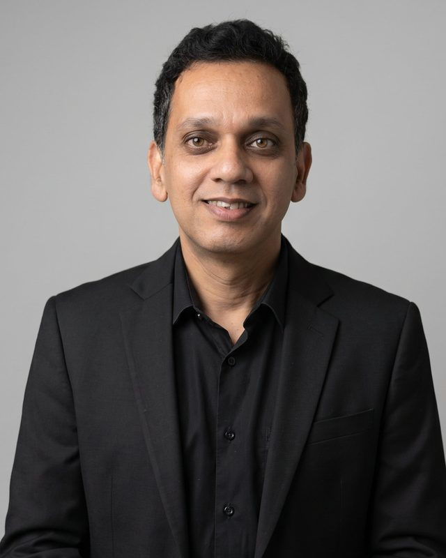

About
About the practice and its principal
Vaz & Associates is a chartered accountancy firm registered with the Institute of Chartered Accountants of India, based in Mumbai.

Ryan Vaz, FCA
Ryan Vaz is a Fellow Chartered Accountant and the principal of Vaz & Associates. He qualified as a Chartered Accountant in 2001, holds a Bachelor of Commerce from the University of Mumbai, and is a Certified Forensic Accountant (ICAI, 2015).
Over more than 25 years he has held senior finance roles, including Chief Financial Officer and Finance Controller positions, in edible oil refining, cement manufacturing, retail, and highways and construction. This work has been in India, Uganda and Tanzania, often in multi-currency environments with lender reporting and group consolidation.
He has been part of ERP implementations and migrations on SAP (including SAP ECC6) and Oracle Fusion, and uses AI tools, Python, VBA and Google Apps Script to automate reconciliations, reporting and data consolidation. He also advises on digital transformation, including systems, dashboards and online presence.
How the practice works
Engagements are handled directly by the principal, supported by articled assistants, some of whom are trained in Python-based automation. Work is documented so that every figure in a reconciliation, model or report can be traced back to its source.
- Scope, responsibilities and timelines are agreed in writing at the start of each engagement.
- Client information is kept confidential, in keeping with the ICAI Code of Ethics.
- Advice is given on the facts provided and the law in force at the time, and is revisited when either changes.
Credentials
| Credential or registration | Issuing body | Year |
|---|---|---|
| Chartered Accountant | ICAI | 2001 |
| Fellow member (FCA) | ICAI | — |
| Certified Forensic Accountant | ICAI | 2015 |
| Bachelor of Commerce | University of Mumbai | — |